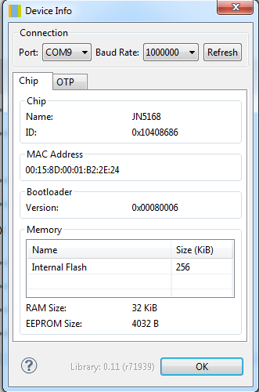
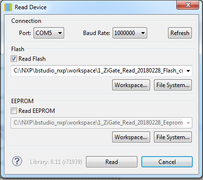
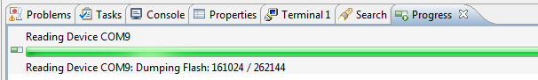
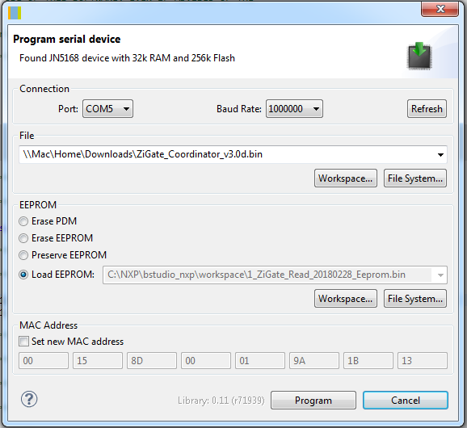

Zigate Backup/Restore¶
Important
Info dans le doc JN-UG-3007 (confirmed in doc JN-SW -4141)
Important
Caution: For a JN516x device, entering a new MAC address is a “one-time programmable’ option and care should be taken to ensure that the MAC address specified is correct before programming, as it cannot be modified after programming.
Tout se fait depuis NXP Beyond Studio
Backup¶
Branchez la Zigate sur le port USB en appuyant sur le bouton de la Zigate puis relacher.
Récupérer les informations de la Zigate
Menu -> Devices -> Device Info
Ensuite, faire un « Read » de la Flash et de l’EEPROM.
Le restore de la Flash ne fonctionne pas pour moi, alors bien noter la version de Zigate utilisée pour re-installer le bin Zigate et pas la copie de la flash. En esperant comprendre plus tard pourquoi cela ne fonctionne pas. Quelqu’un a une idée ?
Si tout se déroule comme prévu vous devez avoir une information de progression sous la forme d’une fenêtre ou dans l’onglet « Progress ».
Voilà le backup est fait. Débranchez la Zigate du port USB.
Restore¶
Branchez la Zigate (ou une nouvelle Zigate) sur le port USB en appuyant sur le bouton de la Zigate puis relacher.
Vérifiez les informations de cette Zigate depuis le menu « Menu -> Devices -> Device Info ». Si c’est la même tout doit être identique, si c’est une nouvelle alors l’adresse MAC doit être différente.
Allez dans le menu « Menu -> Devices -> Program Device ». Selectionner vos fichiers de Backup et mettez l’adresse MAC à la bonne valeur (MAC: cf note haut de page).
Le restore du backup de la Flash ne fonctionne pas dans mon cas. Je n’ai pas trouvé pourquoi. Donc je selectionne le bin de la Zigate. De même le changement de la MAC ne fonctionne pas donc je garde celle en place. Ce qui revient à ne reprogrammer que l’EEPROM…
Voilà le restore est fait. Débranchez la Zigate du port USB.
Vous avez une nouvelle Zigate identique à l’originale (Sauf peut être l’adresse MAC). Si vous perdez la première (crash HW par exemple), il vous suffi de la remplacer par la nouvelle.
Remplacer la Zigate¶
Si pour une raison ou une autre vous devez/voulez remplacer la Zigate alors il faut faire les actions suivantes: (On part de l’hypotheses que Abeille/Jeedom est à jour).
Remplacer la Zigate par une nouvelle vide
Redemarrer Abeille
Depuis la ruche démarrer le réseau Zigbee (La Zigate doit être prête)
Passer en mode inclusion
Appairer tous les équipements du réseau
Abeille mettra a jours les informtions dans Jeedom.